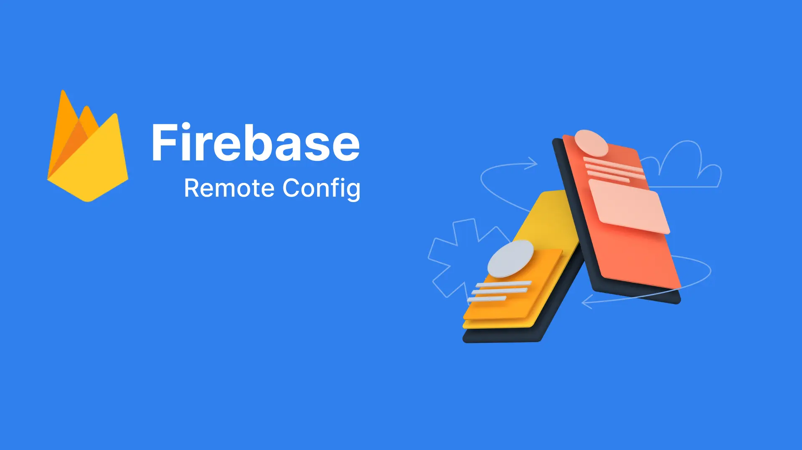

Firebase Remote Config
I. Tổng quan
Firebase Remote Config là một dịch vụ của Firebase giúp bạn quản lý và cập nhật cấu hình ứng dụng mà không cần phải phát hành phiên bản mới trên cửa hàng ứng dụng. Nó cho phép bạn điều chỉnh các giá trị cấu hình từ bảng điều khiển Firebase Console và gửi chúng đến ứng dụng của người dùng một cách linh hoạt.
Dưới đây là một số điểm quan trọng về Firebase Remote Config:
Cập Nhật Động:
- Cho phép bạn điều chỉnh giá trị cấu hình mà không cần cập nhật ứng dụng trên cửa hàng ứng dụng.
- Cập nhật có thể được kích hoạt bất cứ lúc nào, giúp bạn thực hiện các thay đổi nhanh chóng mà không cần phải chờ đợi quá trình phê duyệt.
Phân Loại Người Dùng:
- Bạn có thể phân loại người dùng thành các nhóm và áp dụng các giá trị cấu hình khác nhau cho từng nhóm. Điều này giúp thử nghiệm tính năng và trải nghiệm người dùng.
Điều Kiện Kích Hoạt:
- Cung cấp khả năng áp dụng các giá trị cấu hình dựa trên điều kiện như phiên bản ứng dụng, quốc gia, ngôn ngữ, và các điều kiện tùy chỉnh khác.
- Hiệu Suất và Ổn Định:
- Dữ liệu cấu hình được lưu trữ đồng bộ, giúp đảm bảo hiệu suất cao và ổn định trong quá trình cập nhật.
Integrations:
- Firebase Remote Config có thể kết hợp với các dịch vụ khác của Firebase như Analytics để phân tích hiệu suất các thay đổi cấu hình.
- Có SDK cho nhiều nền tảng như Android, iOS, và web, giúp tích hợp dịch vụ vào ứng dụng của bạn một cách dễ dàng.
An Toàn và Bảo Mật:
- Dữ liệu cấu hình được truyền tải qua kết nối an toàn sử dụng HTTPS, đảm bảo tính bảo mật.
Firebase Remote Config thường được sử dụng để điều chỉnh tính năng ứng dụng, cài đặt và trải nghiệm người dùng mà không cần phải phát hành một phiên bản mới. Điều này rất hữu ích khi bạn muốn thử nghiệm và tối ưu hóa ứng dụng của mình trong thời gian thực.
II. Firebase remote config hoạt động như thế nào?
1. Cơ chế Fetch và Active
Firebase Remote Config hoạt động dựa trên cơ chế lấy và cập nhật dữ liệu cấu hình từ máy chủ Firebase và đồng bộ nó với ứng dụng di động của người dùng thông qua SDK được cung cấp sẵn.

- Khi bạn gọi hàm fetch, SDK Firebase Remote Config kết nối với máy chủ Firebase để lấy dữ liệu cấu hình mới nhất. Dữ liệu này thường được trả về dưới dạng JSON.
Lưu Trữ Dữ Liệu Tạm Thời (Cache):
- Sau khi fetch thành công, dữ liệu cấu hình mới được lưu trữ tạm thời trong bộ nhớ cache của thiết bị. Điều này giúp ứng dụng có thể sử dụng ngay lập tức các giá trị cấu hình mới mà không cần phải fetch lại từ server mỗi khi cần sử dụng.
- Hàm activateFetched chuyển dữ liệu từ bộ nhớ cache sang cấu hình hiện tại của ứng dụng.
Trong trường hợp bạn gọi hàm fetch khi thời gian expiration chưa hết, Firebase Remote Config sẽ kiểm tra xem đã đủ thời gian giữa các lần fetch hay chưa. Nếu thời gian giữa các lần fetch chưa đủ, nó sẽ trả về dữ liệu từ bộ nhớ cache mà không thực hiện lời gọi đến máy chủ Firebase để lấy dữ liệu mới.
Sử Dụng Dữ Liệu Cấu Hình Trong Ứng Dụng:
- Sau khi active, các giá trị cấu hình mới đã sẵn sàng để sử dụng trong mã nguồn của ứng dụng.
Tự Động Cập Nhật Dữ Liệu:
- Nếu bạn đã cấu hình tự động cập nhật dữ liệu, SDK có thể tự động thực hiện quá trình fetch và lưu cache theo thời gian hoặc sự kiện cụ thể. Điều này giúp duy trì thông tin cấu hình ứng dụng mà không cần sự can thiệp thủ công.
- Hàm fetchAndActivate kết hợp cả hai bước fetch và activate một cách tự động.
Quá trình này giúp ứng dụng linh hoạt hóa quy trình cập nhật cấu hình và giảm thiểu thời gian cần thiết để áp dụng các thay đổi. Cả quá trình fetch và lưu cache đều được thực hiện một cách bảo đảm hiệu suất và đồng bộ.
2. Cấu hình theo thời gian thực
Firebase Remote Config cung cấp khả năng cập nhật cấu hình ứng dụng theo thời gian thực thông qua một số tính năng linh hoạt. Khi bạn cấu hình Firebase Remote Config để cập nhật theo thời gian thực, điều này có một số khác biệt so với cách thông thường. Dưới đây là một số khác biệt khi bạn sử dụng tính năng cập nhật theo thời gian thực:
Cập Nhật Ngay Lập Tức (Instant Updates):
- Khi tính năng cập nhật theo thời gian thực được kích hoạt, các thay đổi trong cấu hình có thể được áp dụng ngay lập tức cho ứng dụng mà không cần phải đợi lần fetch tiếp theo.
- Điều này giúp ứng dụng có thể phản ứng nhanh chóng đối với các thay đổi cấu hình mới.
Polling Tự Động (Automatic Polling):
- Firebase Remote Config sẽ tự động thực hiện các lần fetch để kiểm tra và lấy dữ liệu cấu hình mới từ máy chủ Firebase mà không cần phải gọi lệnh fetch từ ứng dụng.
- Điều này giúp đảm bảo rằng ứng dụng của bạn có thể cập nhật cấu hình ngay cả khi người dùng không thực hiện thao tác gì.
III. Tích hợp với Flutter
Tạo project Firebase Demo mới

Trên https://console.firebase.google.com/ đăng nhập vào tài khoản và tạo 1 project mới.

Add App iOS và Android tương ứng, sau đó download file cấu hình và copy vào project
Thêm các lib vào project flutter
- flutter pub add firebase_core
- flutter pub add firebase_remote_config
- flutter pub add firebase_analytics
Khởi tạo tại main

Đối với Android:
Cần thêm: apply plugin: 'com.google.gms.google-services'

Và: classpath 'com.google.gms:google-services:4.3.13'

Truy cập console và Create Configuration


Sau đó publish change, là dữ liệu trên remote config đã sẵn sàng
1. Cơ chế fetch và active

Setup remote và lấy kết quả trong code, chạy debug và kiểm tra dữ liệu chúng ta thấy remoteConfig.getAll() trả về Map chứa các key và value:
- key_demo_remote_config: chính là key đã thêm tại console
- Value là dạng: RemoteConfigValue, để lấy dữ liệu cần cast về dạng string, int, bool … tương ứng

2. Lấy dữ liệu theo thời gian thực
Sử dụng remoteConfig.onConfigUpdated.listen để lắng nghe event thay đổi, trên console thực hiện update dữ liệu và publish change, sau khi publish chúng ta bắt được thay đổi trong event như sau: